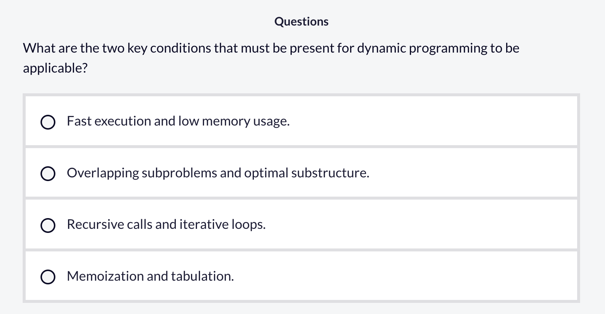
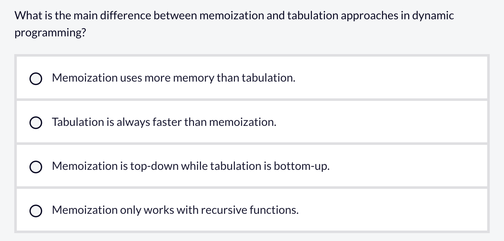
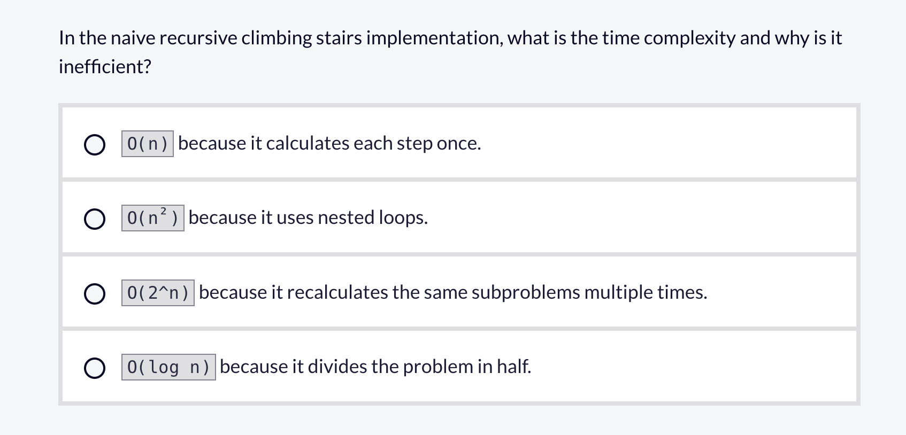

11 动态规划
11.1 理解动态规划（Dynamic Programming）
11.1.1 什么是动态规划？有哪些常见的算法？
动态规划是一种算法技术，它通过将复杂问题分解为更简单的子问题并存储结果以避免重复计算来解决问题。这种方法将通常需要指数时间的问题转化为可以在多项式时间内解决的问题。
动态规划的核心原则
当一个问题中存在两个关键条件时，动态规划就有效。
重叠子问题：在解决较大问题时，相同的较小问题会多次出现。与其反复重新计算这些子问题，不如存储它们的解。
最优子结构：问题的最优解包含其子问题的最优解。这意味着我们可以通过组合较小部分的最优解来构建最佳解。
让我们使用经典的“爬楼梯”问题来考察这些概念。
朴素递归的问题
考虑爬楼梯问题：你正在爬一个有 n 级台阶的楼梯，每次可以爬 1 级或 2 级。有多少种不同的方式可以到达顶部？
示例代码
def climb_stairs_recursive(n):
"""递归方法"""
if n <= 2:
return n # 基本情况：1 级台阶有 1 种方式，2 级台阶有 2 种方式
# 要到达第 n 级台阶，我们可以从第 (n-1) 级或第 (n-2) 级上来
return climb_stairs_recursive(n-1) + climb_stairs_recursive(n-2)由于大量重复计算，这种实现具有指数级时间复杂度。在计算climb_stairs(5)时，会发生以下情况：
climb_stairs(5)调用 climb_stairs(4)和 climb_stairs(3)
climb_stairs(4) 调用 climb_stairs(3) 和climb_stairs(2)
现在 climb_stairs(3) 被计算了两次
climb_stairs(3) 调用 climb_stairs(2) 和 climb_stairs(1)
climb_stairs(2) 总共被计算了 3 次
仅对于 n=5，我们就进行了 9 次函数调用，而实际上只需要 5 次唯一计算。随着 n 增大，这种冗余呈指数级爆炸——climb_stairs(30) 将需要超过 10 亿次函数调用！时间复杂度变为 O(2^n)，对于较大的 n 值来说效率低下且不切实际。
动态规划解决方案
动态规划通过两种主要方法消除这种冗余计算：
记忆化（Memoization，自顶向下方法）
记忆化存储昂贵函数调用的结果，并在再次出现相同输入时返回缓存结果：
示例代码
def climb_stairs_memo(n, memo={}):
"""带记忆化的动态规划"""
# 检查是否已计算过该值
if n in memo:
return memo[n] # 返回缓存结果 - O(1) 查找！
# 基本情况
if n <= 2:
return n
# 计算一次并存储在 memo 中供将来使用
memo[n] = climb_stairs_memo(n-1, memo) + climb_stairs_memo(n-2, memo)
return memo[n]记忆化之所以高效得多，是因为从 1 到 n 的每个唯一值只计算一次。当我们再次需要 climb_stairs(3) 时，不再重新计算（这会触发更多递归调用），而是简单地在 memo 字典中以 O(1) 时间查找。
让我们追踪使用自顶向下方法执行 climb_stairs(5) 的过程，看看记忆化如何消除冗余工作：
示例代码
Call: climb_stairs_memo(5)
memo = {} (空)
Call: climb_stairs_memo(4)
memo = {} (空)
Call: climb_stairs_memo(3)
memo = {} (空)
Call: climb_stairs_memo(2) → 返回 2 (基本情况)
Call: climb_stairs_memo(1) → 返回 1 (基本情况)
Result: 2 + 1 = 3
memo = {3: 3} (已存储!)
Call: climb_stairs_memo(2) → 返回 2 (基本情况)
Result: 3 + 2 = 5
memo = {3: 3, 4: 5} (已存储!)
Call: climb_stairs_memo(3) → 返回 3 (来自 MEMO - 无递归!)
Result: 5 + 3 = 8
memo = {3: 3, 4: 5, 5: 8}效率比较
朴素递归：进行 9 次函数调用，包含重复计算
记忆化：仅进行 5 次唯一计算，然后复用存储的结果
时间复杂度：从 O(2^n) 降低到 O(n)，因为我们只进行 n 次唯一计算
空间复杂度：O(n)，用于 memo 存储和调用栈
实际影响：climb_stairs(30) 从 10 亿多次调用减少到仅 30 次调用！
表格法（自底向上方法）
表格法从底层开始构建解，用子问题的解填充一张表：
示例代码
def climb_stairs_tabulation(n):
"""带表格法的动态规划"""
if n <= 2:
return n
# 创建数组以存储从 0 到 n 所有台阶的结果
dp = [0] * (n + 1)
dp[1] = 1 # 到达第 1 级台阶有 1 种方式
dp[2] = 2 # 到达第 2 级台阶有 2 种方式
# 迭代构建解
for i in range(3, n + 1):
# 到达第 i 级台阶的方式数 = 到达 (i-1) 的方式数 + 到达 (i-2) 的方式数
dp[i] = dp[i-1] + dp[i-2]
return dp[n]表格法通过从最小的子问题开始迭代构建解，完全消除了递归。
让我们看看自底向上方法的实际运行过程，了解我们如何系统地构建解。以下是 climb_stairs(5) 的迭代构建过程：
示例代码
初始状态：
dp = [0, 1, 2, 0, 0, 0]
[0, 1, 2, 3, 4, 5] ← 索引（台阶编号）
逐步构建：
i = 3:
dp[3] = dp[2] + dp[1] = 2 + 1 = 3
dp = [0, 1, 2, 3, 0, 0]
i = 4:
dp[4] = dp[3] + dp[2] = 3 + 2 = 5
dp = [0, 1, 2, 3, 5, 0]
i = 5:
dp[5] = dp[4] + dp[3] = 5 + 3 = 8
dp = [0, 1, 2, 3, 5, 8]
最终结果：dp[5] = 8表格法的主要优势
无递归开销：与记忆化不同，没有递归调用栈。
可预测的执行：我们按预定顺序（1, 2, 3, 4, 5…）计算值。
缓存友好：顺序数组访问优化了内存使用。
易于优化：由于我们只需要最后两个值，可以将空间复杂度降低到 O(1)。
示例代码
def climb_stairs_optimized(n):
if n <= 2:
return n
prev2, prev1 = 1, 2 # 仅存储最后两个值
for i in range(3, n + 1):
current = prev1 + prev2
prev2, prev1 = prev1, current
return prev1效率比较
朴素递归：n=5 时进行 9 次函数调用，呈指数增长。
表格法：n=5 时进行 3 次简单加法，呈线性增长。
时间复杂度：O(n)而不是 O(2^n)。
空间复杂度：使用数组时为 O(n)，优化后为 O(1)。
性能可预测：对于大输入没有栈溢出风险。
两种方法都将时间复杂度从指数级 O(2^n) 降低到线性 O(n)，这是一个巨大的改进，使得解决问题的时间从毫秒级变为对于较大输入等待数年之间的区别。
实际应用
动态规划在计算机科学及更广泛领域有广泛应用：
路线优化：GPS 系统使用动态规划算法查找地点之间的最短路径。
文本处理：拼写检查器和自动补全功能经常依赖动态规划来计算单词之间的编辑距离。
金融建模：投资策略和投资组合优化经常采用动态规划技术。
资源分配：背包问题及其变体出现在调度、预算和资源管理中。
实际示例：硬币找零问题
硬币找零问题是一个经典编程挑战，当使用动态规划解决时，展示了动态规划的两个关键原则：最优子结构和重叠子问题。
硬币找零问题问：“组成目标金额所需的最少硬币数量是多少？”
以下是使用动态规划的一种解决方案：
示例代码
def min_coins(amount, coins):
"""查找组成给定金额所需的最少硬币数量"""
# 用“无穷大”初始化 dp 数组 - 表示无法组成
dp = [float('inf')] * (amount + 1)
dp[0] = 0 # 基本情况：金额 0 需要 0 枚硬币
# 对于从 1 到目标金额的每个金额
for i in range(1, amount + 1):
# 尝试每种硬币面额
for coin in coins:
if coin <= i: # 只有当硬币不超过当前金额时才能使用
# 更新最小值：当前最小值 vs (剩余金额所需硬币数 + 1)
dp[i] = min(dp[i], dp[i - coin] + 1)
# 如果可能则返回结果，否则返回 -1
return dp[amount] if dp[amount] != float('inf') else -1
# 示例用法：
# coins = [1, 3, 4], amount = 6
# dp[6] = min(dp[5]+1, dp[3]+1, dp[2]+1) = min(3+1, 1+1, 2+1) = 2
# 结果：2 枚硬币 (3 + 3)不关心前面怎么选，只假设最后一枚硬币是什么；一旦最后一枚确定，问题就退化为一个已经解决过的更小金额的问题。
以下是动态规划硬币找零算法对 coins = [1, 3, 4], amount = 6 的逐步工作过程：
示例代码
初始状态：
dp = [0, ∞, ∞, ∞, ∞, ∞, ∞]
[0, 1, 2, 3, 4, 5, 6] ← 金额
逐步构建解：
对于金额 = 1：
尝试硬币 1：dp[1] = min(∞, dp[0] + 1) = min(∞, 0 + 1) = 1
dp = [0, 1, ∞, ∞, ∞, ∞, ∞]
对于金额 = 2：
尝试硬币 1：dp[2] = min(∞, dp[1] + 1) = min(∞, 1 + 1) = 2
dp = [0, 1, 2, ∞, ∞, ∞, ∞]
对于金额 = 3：
尝试硬币 1：dp[3] = min(∞, dp[2] + 1) = min(∞, 2 + 1) = 3
尝试硬币 3：dp[3] = min(3, dp[0] + 1) = min(3, 0 + 1) = 1
dp = [0, 1, 2, 1, ∞, ∞, ∞]
对于金额 = 4：
尝试硬币 1：dp[4] = min(∞, dp[3] + 1) = min(∞, 1 + 1) = 2
尝试硬币 3：dp[4] = min(2, dp[1] + 1) = min(2, 1 + 1) = 2
尝试硬币 4：dp[4] = min(2, dp[0] + 1) = min(2, 0 + 1) = 1
dp = [0, 1, 2, 1, 1, ∞, ∞]
对于金额 = 5：
尝试硬币 1：dp[5] = min(∞, dp[4] + 1) = min(∞, 1 + 1) = 2
尝试硬币 3：dp[5] = min(2, dp[2] + 1) = min(2, 2 + 1) = 2
尝试硬币 4：dp[5] = min(2, dp[1] + 1) = min(2, 1 + 1) = 2
dp = [0, 1, 2, 1, 1, 2, ∞]
对于金额 = 6：
尝试硬币 1：dp[6] = min(∞, dp[5] + 1) = min(∞, 2 + 1) = 3
尝试硬币 3：dp[6] = min(3, dp[3] + 1) = min(3, 1 + 1) = 2
尝试硬币 4：dp[6] = min(2, dp[2] + 1) = min(2, 2 + 1) = 2
dp = [0, 1, 2, 1, 1, 2, 2]
最终结果：dp[6] = 2 (通过硬币 3 + 3 实现)此解决方案展示了动态规划的两个关键原则。它具有重叠子问题，因为找到金额 6 的最少硬币数需要知道金额 5、3 和 2 的解。这些相同的子问题在计算其他金额时也会出现。它具有最优子结构，因为任何金额的最优解都包含较小金额的最优解。如果我们知道金额 3 的最少硬币数是 1，那么组成金额 6 的一种方式就是使用该解再加上一枚面值为 3 的硬币。
没有动态规划，我们需要尝试硬币的每种可能组合——可能性数量呈指数级增长。有了动态规划，我们系统地构建解：
时间复杂度：O(金额 × 硬币数量) 而不是指数级。
空间复杂度：O(金额) 用于 dp 数组。
无冗余工作：每个子问题（为每个金额找到最少硬币数）只解决一次。
可重用结果：一旦我们知道金额 3 的最少硬币数，我们就将这一知识用于所有能从中受益的更大金额。
何时使用动态规划
当满足以下条件时，动态规划是有效的：
问题可以分解为重叠子问题。
问题表现出最优子结构。
朴素递归解决方案会涉及重复计算。
你需要以空间复杂度为代价来优化时间复杂度。
常见的动态规划模式包括优化问题（寻找最小/最大值）、计数问题（达成某目标的方式数量）以及可以分解为更小决策的决策问题。
动态规划通过系统地存储和重用子问题的解，将复杂问题转化为可管理的问题。理解这一技术为高效解决各种计算挑战打开了大门。


